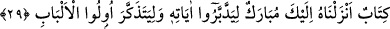

Çünkü Allah katında dünyanın bir sivrisinek kanadı kadar değeri yoktur. Fakat “İşte
âhiret yurdu. Biz, onu yeryüzünde büyüklük taslamayan ve bozgunculuk
çıkarmayanlara has kılarız” (el-Kasas 28/83). Bunlar da Allah’a ve O’nun emirlerine
boyun eğen ihlâslı mü’minlerdir. Allah, rahmetinin genişliği ve dünyanın darlığından
dolayı onları şu dünya hayatında mükâfatlandırmıyor. Onlara vereceği karşılığı bunun
için âhirete erteliyor. Böylece insan hevâdan hüdâya, fücûrdan takvâya yükseldikçe
ecrini en eksiksiz bir teraziyle alır. Sonra bütün hayır ve mutlulukların kaynağı Kur’an
olduğu için Allah Teâlâ önce onun özelliklerini vermek sonra da ondaki maslahatları
açıklamak maksadıyla şöyle buyuruyor:
29. (Rasûlüm!) Sana bu mübârek Kitab’ı, âyetlerini düşünsünler ve aklı olanlar
öğüt alsınlar diye indirdik.
(
) kelimesi, mahzuf bir mübtedâ olan (
)’nin haberidir. (
) ise “kitab”ın sıfatı
ve mahzuf mübtedânın ikinci haberidir. Yâni, “bu sana indirdiğimiz mübârek bir
kitaptır” demektir.
“(Rasûlüm!) Sana bu mübârek” ve kendisine inanıp içerdiği hükümlere, hakikat ve
işâretlere uygun olarak amel edenler için hem din hem de dünya açısından çok faydalı
“Kitab’ı, âyetlerini düşünsünler … diye indirdik.”
“Bereket” bir şey hakkında ilâhî hayrın gerçekleşmesi; “mübârek” ise bu hayrı taşıyan
şey anlamındadır.
Düşünsünler anlamına gelen (
) kelimesi (
) fiiline müteallık olup “onu sana
indirdik ki âyetlerini düşünsünler” anlamına gelir. (
) fiilinin aslı ise (
)
şeklindedir. Âyetleri hakkında sağduyuyla düşünerek bu âyetlerin zâhirinin peşinden
gelen birtakım yüksek mânâları ve uygun te’villeri anlayabilsinler, yâni mânâları
üzerinde tefekkür etsinler diye indirdik. Zira “tedebbür”, işlerin varacağı noktayı
düşünmekten ibâret iken, “tefekkür” matlûbu algılayabilmek için kalbin eşyanın
mânâları üzerinde tasarruf etmesidir.
“Ve aklı olanlar” yâni vehim şâibesinden uzak hâlis akıl sâhipleri “öğüt alsınlar
diye… indirdik.” Burada “tedebbür” kavramı, bütün ulemâya genelleştirildiği halde
“tezekkür” (
) ifâdesiyle akıllılar grubunun özel bir birimi olan hâlis akıl
sâhiplerine özgü kılınmıştır. Çünkü tedebbür anlamak için, tezekkür ise ilim
sâhiplerinin büyüklerine özgü bir haşyet ve korkunun vâki olması içindir.
Bazıları der ki: İstenilen şeyin kaybedilmesi anında tefekkür etmek kalbin nefsânî
sıfatlarla perdelenmesinden dolayıdır. Tezekkür ise bu perdenin kalkıp ilk fıtrata
dönülmesi esnâsında gerçekleşir. İnsan nefsine ezelde bir karakter olarak yerleştirilmiş